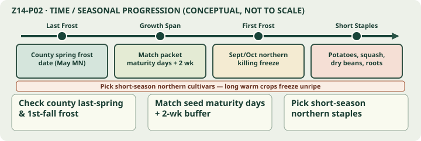

Z14-P02 · Food production and preservation · New manuscript
Match Upper Midwest growing seasons to crop days-to-maturity
Select vegetable varieties that reliably ripen and cure before Minnesota's first autumn killing freeze.
When it applies · Home vegetable plots in USDA Hardiness Zones 3–5 and short-season northern climates.
Equipment · Local county frost-date table, seed packets listing days-to-maturity, and seasonal garden calendar.

Actions
- Check average last-spring and first-autumn killing-frost dates for your exact county (ranging from roughly 100 frost-free days in northern Minnesota to 145+ in southern counties) rather than national generic calendars.[P01]
- Compare every seed packet's "days to maturity" (noting whether counted from direct seed OR from indoor transplant) against your true frost-free window plus a two-week safety buffer for cool wet springs.[P01, P19]
- Prioritize short-season, cold-tolerant northern cultivars for staple calories (early potatoes, bush dry beans, short-season winter squash, carrots, cabbage) instead of long-season warm crops that freeze unripe.[P01]
Failure recognition · Planting 120-day warm-season melons or sweet potatoes in northern Minnesota in late May only to lose the entire crop to a mid-September frost.[P01]
Verify · Confirm seed-packet maturity days fit comfortably inside local spring-to-autumn frost dates with buffer.[P01, ED]
Stop or change course · Late-season seedings that lack enough frost-free days to mature should be switched to fast cool-season greens or cover crops instead.[P01, P19]
Evidence and editorial notes
- P01 · University of Minnesota Extension · Planting the Vegetable Garden (current web edition)
- Section: Site Selection, Sunlight, Frost Dates, and Short-Season Planning · Conditions: Home vegetable gardening in Upper Midwest / Minnesota (USDA Zones 3–5)
Support: Select a sunny well-drained garden site receiving 6–8+ hours of direct sunlight, match crop days-to-maturity to local last-spring and first-autumn frost dates, and separate cool-season crops from frost-sensitive warm-season crops.
Limitations: Microclimates, low frost pockets, and soil clay/sand composition shift local planting windows by weeks. · Conflicting evidence: None; anchors regional Minnesota growing-season realism.
Editorial note: Grounds Z14 regional food production and frost-window planning. · Specialist reviewer: Horticulture and university Extension specialist
Primary source · checked 2026-11-24 - P19 · University of Minnesota Extension · Planting the Vegetable Garden (current web edition)
- Section: Season Extension, Cold Frames, Seed Saving Limits, and Succession Planting · Conditions: Northern short-season gardens seeking spring/fall harvest extension
Support: Use row covers, low tunnels, or ventilated cold frames to buffer light frosts and stagger fast-maturing crops (succession planting), noting that open-pollinated vs hybrid seeds behave differently if saved and require isolation/dry storage.
Limitations: Unvented plastic tunnels overheat rapidly on sunny spring days and cook tender seedlings within an hour. · Conflicting evidence: None; grounds realistic northern season extension without overpromising winter yields.
Editorial note: Supports northern resilience and seed-planning cards in Z14. · Specialist reviewer: Horticulture and Extension specialist
Primary source · checked 2026-11-24
Source lineage · UMN Extension Planting the Vegetable Garden; new manuscript · Classification · New manuscript.